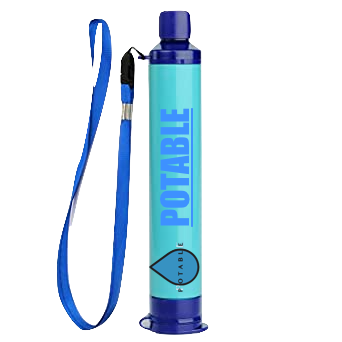

The POTABLE-straw
The POTABLE-straw is a straw which filters dirty waterinto drinkable clean water. The straw can be placed
at any water source and be used as any normal straw.
This will result into a clean drinkable water.
How does it work?
When the POTABLE-straw is being used the water goes
through 0.2 microns pores which then filters contaminants,
bacterias etc. into fibers. The water leaves behind the
contaminants, and it results as clean water.